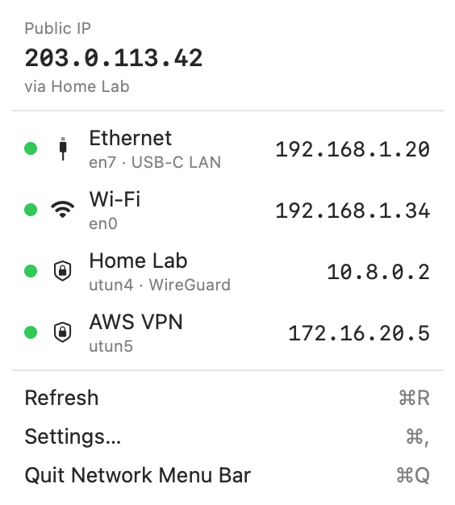
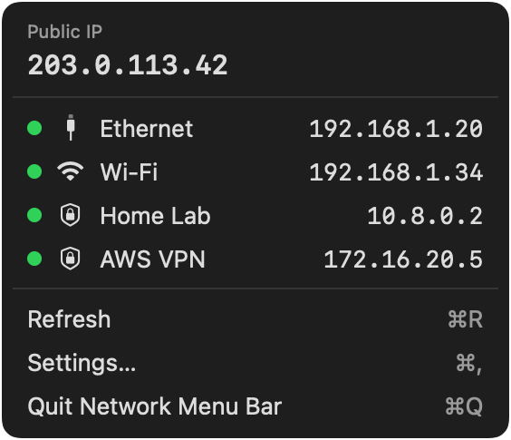

Know how you're connected.
At a glance.
Ethernet, Wi‑Fi and VPN status — and every IP address that matters — one click away in the macOS menu bar.
brew install --cask kijart/tap/network-menu-bar


- 0 %CPU when nothing changes
- 17 MBof memory after launch
- 1small HTTPS request when the way out to the internet changes
- 0dependencies, accounts or analytics
Everything about the connection. Nothing more.
No Terminal, no System Settings, no guessing which VPN is up.
-
Public and private IPs
The public IP on top, then the private IPv4 of every network. Click any of them to copy it.
-
Your VPNs, by name
WireGuard, OpenVPN Connect, Tailscale and other network-extension VPNs after their profile, plus Tunnelblick and AWS VPN Client.
-
Where the traffic goes
In the detailed layout, shows which network the public IP exits through, with split‑ and full‑tunnel VPNs alike.
-
Updates itself
About half a second after a cable is plugged in, the Wi‑Fi changes or a VPN connects. No polling.
-
Compact or detailed
Pick the layout, hide the network icons, and optionally show an IP next to the menu bar icon.
-
Native and tiny
SwiftUI, about 2 MB, no Dock icon. Launches at login. In English and Spanish.
Built for people who live on VPNs
Which network is your traffic really using?
With a VPN up, the Mac has several addresses and only one of them reaches the internet. Network Menu Bar asks the system where the traffic leaves and says so. In the detailed layout, “via Home Lab” appears right under the public IP.
- WireGuard
- OpenVPN Connect
- Tailscale
- Tunnelblick
- AWS VPN Client
- Any other: VPN (utunN)

Install in a minute
Requires macOS 14 Sonoma or later.
Homebrew Recommended
Installs, updates with the other casks and skips the Gatekeeper prompt.
brew install --cask kijart/tap/network-menu-bar
Disk image
- Download the
.dmgand drag the app to Applications. - macOS 15 or later: open the app once, then click Open Anyway in System Settings → Privacy & Security. macOS 14: right‑click the app and choose Open.
The release page also lists the SHA‑256 checksum of each disk image.
Your network stays on the Mac.
The only request the app makes is an HTTPS lookup of the public IP: at launch, when the way out to the internet changes, or on Refresh. No analytics, no accounts, no timers — and the code is open for anyone to check.